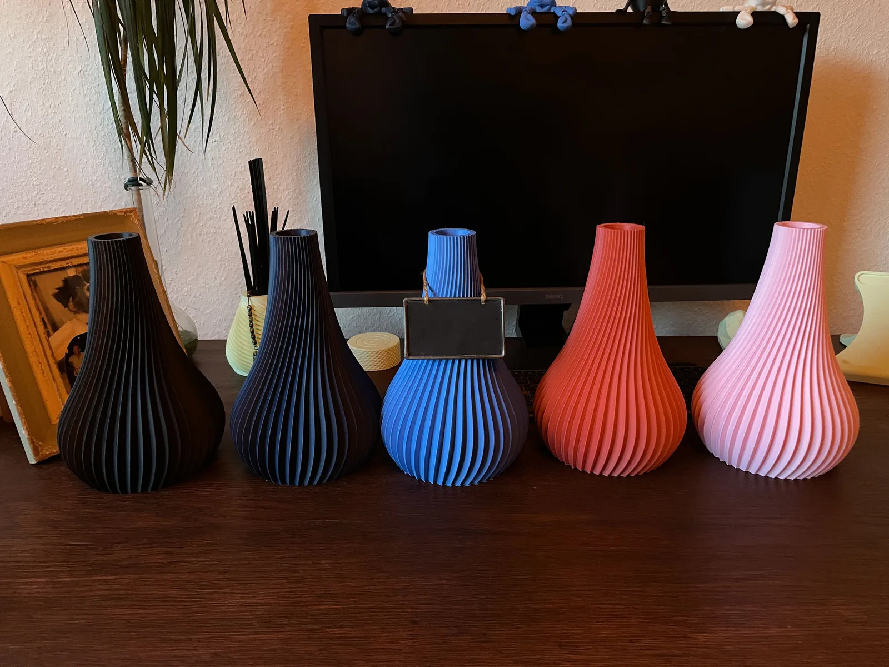
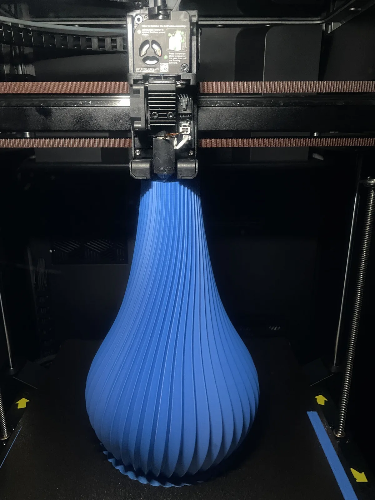

3D-Druck · Handgefertigt auf Bestellung
Bauchige Silhouette, feine Spiralrillen, matte Oberfläche — gedruckt in fünf Farben von Schwarz bis Rosé. Gemacht für Trockenblumen und Pampasgras: skulptural genug, um auch leer gut auszusehen.

Jede Vase entsteht auf Bestellung, Schicht für Schicht in einem Stück — keine Naht, kein Kleben, keine Lagerware. Das Foto zeigt eine der blauen Vasen, Sekunden nachdem der Druckkopf die letzte Bahn gelegt hat.
Weil jede Vase einzeln gedruckt wird, sind Wunschfarbe und kleine Anpassungen kein Sonderfall, sondern der Normalfall — einfach bei der Anfrage dazuschreiben.